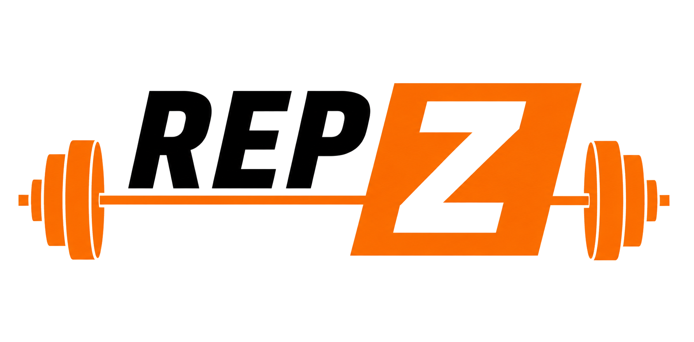

Tes repas, tes entraînements, tes objectifs — au même endroit.
Analyse tes calories et tes macros, compare les portions et vois comment chaque repas sert tes objectifs.
Calories, protéines, glucides et lipides calculés automatiquement pour chaque repas.
Définis ta cible calorique et suis ta progression jour après jour.
Visualise ton évolution et ajuste ton alimentation en conséquence.
Des suggestions adaptées à ce qu'il te reste à manger dans la journée.